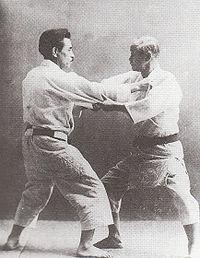

Judo
Judo (柔道 jūdō?, meaning "gentle way") is a modern martial art, combat sport and Olympic sport created in Japan in 1882 by Jigoro Kano. Its most prominent feature is its competitive element, where the object is to either throw or takedown one's opponent to the ground, immobilize or otherwise subdue one's opponent with a grappling maneuver, or force an opponent to submit by joint locking or by executing a strangle hold or choke. Strikes and thrusts by hands and feet as well as weapons defences are a part of judo, but only in pre-arranged forms (kata) and are not allowed in judo competition or free practice (randori). The philosophy and subsequent pedagogy developed for judo became the model for other modern Japanese martial arts that developed from koryū (古流?, traditional schools). The worldwide spread of judo has led to the development of a number of offshoots such as Sambo and Brazilian Jiu-Jitsu. Judo practitioners are called judoka.

Early History of Judo
The early history of judo is inseparable from its founder, Japanese polymath and educator Jigoro Kano (嘉納 治五郎 Kanō Jigorō?, 1860–1938), born Shinnosuke Kano (嘉納 新之助 Kanō Shinnosuke?). Kano was born into a relatively affluent family. His father, Jirosaku, was the second son of the head priest of the Shinto Hiyoshi shrine in Shiga Prefecture. He married Sadako Kano, daughter of the owner of Kiku-Masamune sake brewing company and was adopted by the family, changing his name to Kano, and ultimately became an official in the Bakufu government. In February 1882, Kano founded a school and dojo at the Eisho-ji (永昌寺?), a Buddhist temple in what was then the Shitaya ward of Tokyo (now the Higashi Ueno district of Taitō ward). Iikubo, Kano's Kitō-ryū instructor, attended the dojo three days a week to help teach and, although two years would pass before the temple would be called by the name Kodokan (講道館 Kōdōkan?, "place for expounding the way"), and Kano had not yet received his Menkyo (免許?, certificate of mastery) in Kitō-ryū, this is now regarded as the Kodokan founding. The Eisho-ji dojo was a relatively small affair, consisting of a twelve mat training area. Kano took in resident and non-resident students, the first two being Tsunejiro Tomita and Shiro Saigo.[13] In August, the following year, the pair were granted shodan (初段?, first rank) grades, the first that had been awarded in any martial art.
Judo in the present and Future
There are three basic categories of waza (技?, techniques) in Judo: nage-waza (投げ技?, throwing techniques), katame-waza (固技?, grappling techniques) and atemi-waza (当て身技?, striking techniques).[19] Judo is most known for nage-waza and katame-waza. Judo practitioners typically devote a portion of each practice session to ukemi (受け身?, break-falls), in order that nage-waza can be practiced without significant risk of injury. Several distinct types of ukemi exist, including ushiro ukemi (後ろ受身?, rear breakfalls); yoko ukemi (横受け身?, side breakfalls); mae ukemi (前受け身?, front breakfalls); and zenpo kaiten ukemi (前方回転受身?, rolling breakfalls). The person who performs a waza is known as tori (取り?, literally "taker") and the person to whom it is performed is known as uke (受け?, literally "receiver"). The international governing body for Judo is the International Judo Federation (IJF), founded in 1951. Members of the IJF include the African Judo Union (AJU), the Pan-American Judo Confederation (PJC), the Judo Union of Asia (JUA), the European Judo Union (EJU) and the Oceania Judo Union (OJU), each comprising a number of national judo associations. The IJF is responsible for organising international competition and hosts the World Judo Championships and is involved in running the Olympic Judo events. Numerous non-IJF affiliated organisations exist, often having a more traditional focus than some of the IJF-affiliated organisations, which are sometimes criticised for over-emphasising the competitive side of judo.
Visit this link:Wikpedia Reference for Judofor more reference material.